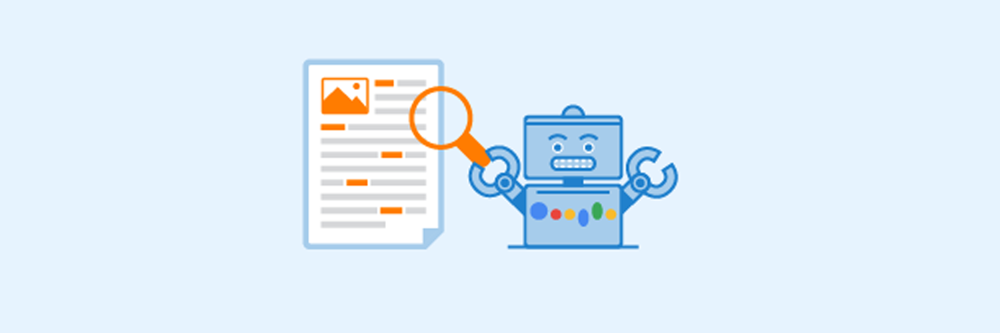
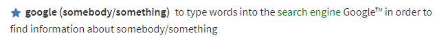

Come funziona un motore di ricerca + 3 curiosità su Google.
Alzi la mano chi non ha mai cercato qualsiasi cosa su Google! Ma sai davvero cosa succede quando facciamo una ricerca? Scoprilo con questo articolo.
Indice
- 1. Cos’è un motore di ricerca
- 2. Come funzionano i motori di ricerca
- 2.1 La fase di scansione
- 2.2 Il processo di indicizzazione
- 2.3 Posizionamento e creazione della serp
- 3. 3 curiosità su Google
1. Cos’è un motore di ricerca
Se sei arrivato a leggere questo articolo probabilmente avrai digitato delle parole chiave nel tuo motore di ricerca. Di conseguenza mi aspetto che tu sappia almeno per sommi capi di cosa stiamo parlando.
Se volessimo spiegarlo nel modo più chiaro possibile, magari a qualcuno alle prime armi con le nuove tecnologie (e fidati che sono in molti), potremmo dire in parole povere che si tratta di un sito web in cui si possono effettuare ricerche di ogni tipo. Niente di più vero!
Nel corso degli anni ne sono stati sviluppati a decine. Tra i più famosi troviamo Yahoo, Bing, Baidu, DuckDuckGo, che nella maggior parte dei casi vengono etichettati come “motori di ricerca alternativi”. Il perché è presto detto: a spadroneggiare in cima alla classifica con più del 90% di utilizzo, resta il colosso di Mountain View, Google.
Parlare di Google come un semplice motore di ricerca è piuttosto riduttivo al giorno d’oggi. La sua evoluzione in motore di risposta è stata una conseguenza dell’evolvere nel nostro modo di fare ricerche. Non siamo più fruitori occasionali come eravamo un tempo. In un mondo dove il numero di connessioni supera di gran lunga quello della popolazione mondiale, dove siamo costantemente di fretta e sempre incollati ai nostri dispositivi mobile, Google ha deciso di cambiare i suoi algoritmi di ricerca in modo da rispondere nella maniera più veloce e chiara possibile alle nostre esigenze.
Sono finiti i tempi in cui il web risultava pieno zeppo di siti spazzatura, directory inutili, contenuti scarni e privi di qualsiasi utilità. Come disse Bill Gates nel lontano 1996 Content is King
proprio ad evidenziare il fatto che Google premia chi crea contenuti di qualità utili al lettore, rispettando poi anche qualche regola che lo riguarda in prima persona. Si parla spesso di SEO copywriting2, di ottimizzazione per i motori di ricerca e di come ogni pagina di un sito web debba essere strutturata in modo da scalare la classifica nella serp per raggiungere il tanto agognato primo posto.
Diamo allora a Google il titolo che merita: è un sistema software progettato per cercare informazioni nel web (pagine, immagini, video e file) e ne restituisce un elenco ordinato secondo determinati criteri che si tiene stretto come la ricetta della coca cola. Ne conosciamo alcuni, di cui ti parlerò più avanti.
2. Come funzionano i motori di ricerca
Fin qui nulla di eccezionale, no? Ma per capire meglio il minuzioso lavoro di cui Google si fa carico ad ogni nostra richiesta dobbiamo fare un salto dietro le quinte, andiamo…
Il processo di ricerca e di catalogazione delle informazioni di un motore come Google avviene in tre fasi distinte.
2.1 Il processo di scansione
Così come ogni altro motore di ricerca, Google si avvale di software chiamati bot o spiders, o più semplicemente Google Bot. Immaginali come dei piccoli ragnetti, il cui compito è scansionare il world wide web alla ricerca di informazioni. Quando atterrano su un sito web ne controllano il codice html, i contenuti, e saltano da una pagina ad un’altra con l’aiuto dei link interni.
In particolare si soffermano su alcuni elementi della pagina tra cui:
- il tag <title>, ovvero il titolo che comparirà nello snippet
- la <meta description>, la porzione di testo presente sotto il title
- i testi alternativi delle immagini
- il testo in grassetto e quello in corsivo
- le keywords più rilevanti
Questo processo di scansione non avviene una singola volta, ma ad intervalli regolari gli spiders tornano a visitarla alla ricerca di nuovi link e contenuti. Da qui nasce l’importanza di creare una sitemap per il nostro sito, in modo da poter facilitare la scansione ed indicare ai bot quali sono le pagine più importanti del sito in modo che vengano controllate più di frequente.
Spesso accade che Google Bot all’interno di un sito non sia in grado di scansionarne una pagina oppure un determinato contenuto. Questo accade quando decidiamo di bloccarne la scansione attraverso il file robots.txt. Solitamente viene usato per alleggerire il lavoro degli spiders, evitando il controllo di contenuti non ritenuti utili per l’utente.
2.2 Il processo di indicizzazione
Dopo che una pagina è stata ben scansionata, Google ne crea una copia e la inserisce nel suo indice, un enorme database di informazioni collezionate dai bot durante il loro viaggio nel web.

Questa è la fase che più si addice ad essere paragonata al lavoro svolto da un bibliotecario: Google ordina e classifica i contenuti dell’indice in base alle tematiche, alle categorie, alle parole chiave scovate dagli spiders e ne crea una biblioteca fornitissima.
Sfatiamo dunque un mito: diversamente da come siamo portati a credere, quando si effettua una ricerca, Google non va a pescare le informazioni che ci servono in giro per il web alla cieca ma le cerca all’interno del proprio indice visto che si è faticosamente impegnato ad ordinare pagina dopo pagina.
Sa benissimo dove cercare ciò di cui abbiamo bisogno, ed ecco perché impiega pochissimi secondi nel fornirci i risultati più pertinenti alle keywords che abbiamo inserito.
2.3 Posizionamento
L’ultima fase del lavoro di Google è il ranking (o posizionamento) e avviene nel momento in cui l’utente effettua una ricerca. Dopo che abbiamo inserito le keywords nella casella di ricerca, Google ci fornisce la pagina con i risultati, quella comunemente conosciuta col nome di serp.
I contenuti presenti in questa pagina variano a seconda dell’utente e dell’ambito di ricerca. Se ad esempio digitiamo “ristoranti a 5 stelle” e ci troviamo a Roma, Google ci fornirà una lista di ristoranti nella nostra zona e non di certo a Bologna.
Come abbiamo poi detto poco fa, l’indice di Google contiene informazioni di tipo testuale ma anche foto e video. In questo modo riesce a creare una serp mista di contenuti in base al nostro intento di ricerca. Facciamo un esempio: se digito “come cambiare gomma auto” Google è in grado di capire che non sto cercando un carrozziere in zona ma che ho intenzione di effettuare la sostituzione per conto mio. Di conseguenza eviterà di inserire nei risultati una mappa con le officine più vicine al punto in cui mi trovo, ma preferirà mostrarmi una guida step by step per sostituire la gomma, associata anche a contenuti visivi come ad esempio un video tutorial. Provare per credere!
Dal momento che nel web è certamente possibile trovare più di una guida su come cambiare una gomma alla mia aiuto, in base a cosa Google decide quale sia il risultato a me più utile? Ad oggi stimiamo che esistano più di 200 fattori che influenzano il ranking, alcuni dei quali conosciuti, altri no.
Abbiamo già detto che i bot si soffermano su determinati elementi della pagina come il titolo, la descrizione o i testi nelle immagini, i cosiddetti fattori on-page. Esistono poi altri elementi più tecnici che vale sempre la pena ottimizzare come ad esempio il già citato robots.txt, la sitemap, il controllo dei link non funzionanti e altro ancora.
Di tutti questi aspetti e della loro ottimizzazione se ne occupa chi si intende di SEO, il cui significato è proprio “ottimizzazione per i motori di ricerca”.
Resta il fatto che per Google la cosa più importante è il contenuto: anche se ottimizziamo ogni singolo elemento di una pagina web ma il contenuto fruibile all’utente risulta scarno e di poco valore, va di per sé che quella pagina nel corso del tempo risulterà sempre meno utile al lettore e di conseguenza perderà posti in serp.
3. 3 curiosità su Google
Per concludere il nostro articolo abbiamo selezionato per voi alcune curiosità che riguardano il motore di ricerca più usato al mondo. Buona lettura!
- In origine c'era Backrub
- Caprette nel quartier generale.
Questo è sicuramente un fatto divertente di cui resterai sorpreso. Nella base operativa di Google infatti, di tanto in tanto vengono affittate circa 200 capre che si occupano di mangiare l’erba alta all’esterno dell’edificio. Un bel modo del tutto ecologico per falciare il prato!
- Google sbarca sul dizionario. 
Il nome originario di Google era Backrub. Proprio così! All’inizio era stato creato come motore di ricerca per analizzare i backlinks, per valutare l’importanza di un sito web e di come fosse collegato ad altri siti affini. Dopo circa un anno divenne Googol che in matematica esprime un numero grandissimo pari a 10100 . Questo perché i fondatori si aspettavano una grande mole di informazioni da dover gestire.
Un po’ come il nostro “petaloso” dal 2006 il nome di Google diventa una voce dell’Oxford English Dictionary. Un verbo a tutti gli effetti! Se cerchiamo il suo significato troviamo che “to google” vuol dire proprio “fare una ricerca”. Nello stivale è stato poi coniato come googlare.